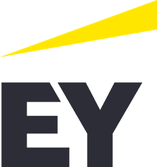

linkedin.com/in/russelldudek · https://russelldudek.github.io/EY/

Close the gap between capability and trust.
A candidate thesis for simulation-led physical AI consulting.
Inferred mandate
Turn simulation-led physical AI into client-ready operating capability: safe enough to trust, engineered enough to maintain, and repeatable enough to scale across engagements.
Why this role exists now
EY is publicly positioning physical AI inside ey.ai and has described a simulation-first humanoid robotics program using NVIDIA Omniverse and Isaac technologies, followed by controlled physical testing and phased industrialization. The role combines engineering depth with client workstream leadership, people management and engagement economics.
What the title understates
The manager is not merely supervising model development. The manager must keep one coherent line of accountability across the twin, the physical system, the client's operating model, the team and the commercial engagement.
Operating tensions
linkedin.com/in/russelldudek · https://russelldudek.github.io/EY/
The Reality Transfer Case
One client-readable case connecting engineering evidence to operating permission.
Core proposition
The case follows six linked evidence dimensions. It does not replace technical artifacts. It prevents the workstream from fragmenting into a good simulation, a separate hardware test, a late safety review, an unowned deployment and a weak client handoff.
| Dimension | Question | Representative evidence | Decision impact |
|---|---|---|---|
| Mission | What task, user and outcome justify embodied AI? | Workflow baseline, task definition, exception burden, value hypothesis. | Explore / stop. |
| Environment | Which physical states and edge conditions are covered? | Twin assumptions, scenario catalogue, domain randomization, rehearsal results. | Rehearse / bound. |
| Perception | What does the system know, infer and fail to observe? | Sensor health, confidence, fusion, drift, uncertainty and diagnostic telemetry. | Instrument / limit. |
| Authority | Who may initiate, override, stop, resume and accept risk? | Control modes, safety envelope, human role, escalation and fallback. | Bound / approve. |
| Run state | Can the release be observed, tested, rolled back and recovered? | Version traceability, SIL/HIL evidence, CI/CD, regression, rollback and recovery. | Pilot / hold. |
| Learning | Who owns adoption, economics, incidents and improvement? | Owner, support model, usage evidence, rework, reuse and post-deployment learning. | Operate / reuse. |
Decision dispositions
Rehearse when environment coverage is weak. Instrument when perception uncertainty is invisible. Bound when human or safety authority is unclear. Pilot when evidence supports controlled use. Hold when run-state integrity fails. Reuse only after client ownership and economics are proven.
Cost of inaction
Without one coherent transfer case, teams can confuse simulation performance with operating readiness, discover authority gaps late, create expensive rework, lose client confidence and fail to convert a successful engagement into reusable capability.
linkedin.com/in/russelldudek · https://russelldudek.github.io/EY/
Adjacent evidence, stated precisely
The campaign does not inflate technical tenure to manufacture fit.
Evidence map
Strongest reasonable objection
Russell is not a career ROS/Omniverse robotics engineer and should not claim recent production ownership of the complete stack in the posting.
The interview should test whether adjacent physical-systems, high-reliability and operating evidence is sufficient for a manager who can lead specialists, contribute where credible, ask technically useful questions and keep the client, team, economics and operating handoff connected.
Do not overstate
- ROS, C++/Java or Omniverse tenure.
- Production digital-twin ownership.
- MLflow, HIL/SIL or cloud ML platform ownership.
- Deep-learning research credentials beyond verified evidence.
What can be tested
- Physical-systems and safety judgment.
- Technical-operational translation.
- Workstream leadership and client trust.
- Quality, governance, adoption and operating mechanisms.
- Ability to learn and work beside deeper specialists.
linkedin.com/in/russelldudek · https://russelldudek.github.io/EY/
Earn the right to lead
Start with listening, bounded contribution and evidence.
0-30 · Read
Map capability, standards, authorities, active engagements, alliance assets, economics and one useful bounded contribution.
31-60 · Lead
Own a defined technical-operating seam, clarify evidence and authority, and make the client decision path legible.
61-90 · Transfer
Close with sustainment ownership, harvest reusable learning and identify the next need grounded in proved client value.
Executive questions
Tests whether the binding constraint is technical, operational, commercial or organizational.
Reveals EY's assurance logic and manager decision rights.
Clarifies ownership, dependency and handoff risk.
Surfaces the true manager scorecard.
Tests where reusable assets and operating discipline create leverage.
Primary public sources
- https://careers.ey.com/ey/job/New-York-Physical-AI-Engineering-Consultant-Manager-Consulting-Open-Location-NY-10001-8604/1407252133/
- https://www.ey.com/en_gl/alliances/fincantieri-humanoids-strengthening-industrial-operations
- https://www.ey.com/en_gl/services/ai/platform
- https://www.ey.com/en_gl/services/big-data-analytics
- https://www.ey.com/en_gl/value-realized-annual-report
Independent candidate analysis. Company marks identify the intended employer; this is not an EY publication or endorsement.